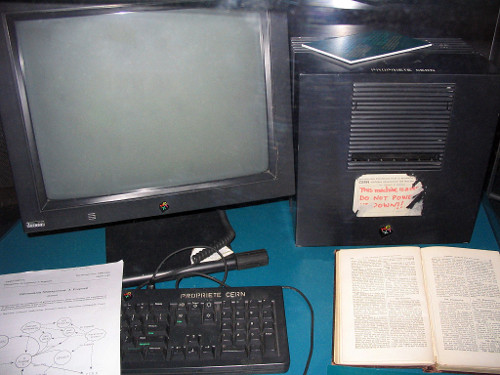
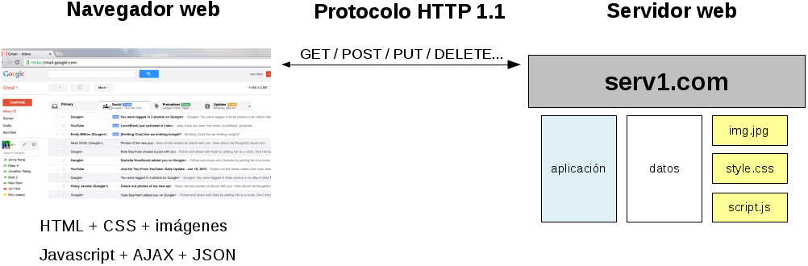
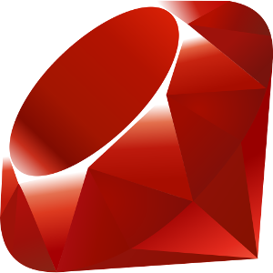

Rails Girls Gran Canaria 2015
Contenidos
- Historia y conceptos de la WWW
- Programación con Ruby
Vida y milagros de la World Wide Web
La primera web

- CERN, 1990/91
- Tim Berners-Lee con el apoyo de Robert Cailliau
- Compartir conocimiento científico
- http://info.cern.ch/
- World Wide Web Consortium (W3C), 1994
La web moderna

- Nuevo rol del navegador
- Interacción bidireccional e inmediata
La web moderna
- Un escenario complejo
- La interacción y la innovación como ejes centrales
Garajes Comunidades- Desarrollo colaborativo
- Código abierto
Ruby: a programmer's best friend
Ruby en dos palabras

- Lenguaje de programación de código abierto
- Dinámico, flexible y expresivo
- Funcional y orientado a objetos
- Propósito general
- Ruby on Rails: framework para desarrollo web con Ruby
Pasen y vean
- Sintaxis legible (no hacen falta los paréntesis (bueno, casi nunca
(¡en serio!)))
- Las mayúsculas son relevantes
- Uso de bloques de código
- http://tryruby.org
/